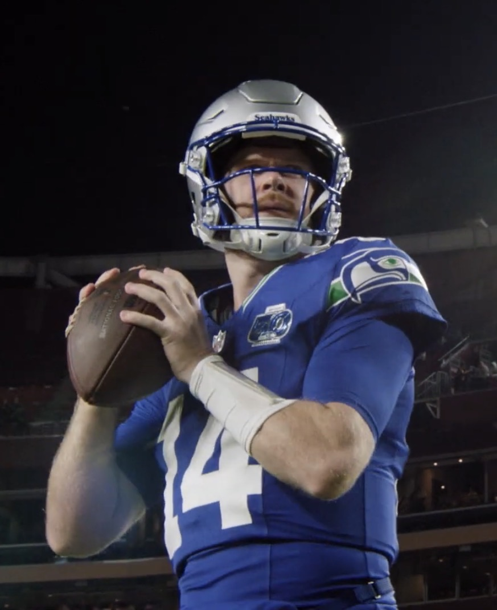

Last Week's Number One
Meets This Week's
Willis's Willies play ceefry, the table leader plays the one manager who has his number, and the defending champion meets derrek777 for the first time with both at 2-4.

Sam Darnold: Tennessee Titans / CC BY 4.0
Week 4
The slate
Three weeks in, one team has a single loss and four are one result behind it. At the other end, two teams are 1-5 and two more are 2-4, and the two 2-4 teams play each other, so one of them leaves the week no better than 3-5.
The game
First against seventh, or fourth against first
Last week we ranked Willis’s Willies first and ceefry seventh. This week it is the other way round, near enough, and the schedule has put them against each other. KnightRider_85 lost his first results of the season in week 3 with Sam Darnold back and scoring 28.16. ceefry scored 217.99 and leads the league in points. KnightRider_85 is 2-3 against him all time.
Sleeper's week 4 projections, scored on our settings, have ceefry at 186.5 and the Willies at 166.3 with Breece Hall out. Two other games project to wider margins, so this is not the lopsided one on paper. Roster strength has rated ceefry near the top all season, including the weeks he lost.
The rest
The leader draws his problem opponent
geauxjack is 5-1 and has a winning record against most of this league, including 6-0 against KnightRider_85 and 7-1 against CaptainClark. ProfessorMerlyn is one of two exceptions. He is 4-3 against geauxjack in the regular season, and he goes into this one at 1-5 having had more points scored against him than anyone. The projections have Merlyn ahead, 172.1 to 167.2, largely because Justin Jefferson is listed out.
CaptainClark and brunosilvadev are both 4-2. brunosilvadev has won both of their previous meetings. Clark has Caleb Williams and Puka Nacua on the injury list and a roster that produced 181.97 last week with neither of them scoring a point.
Who Dey and the Blowfish play OneManEra, who scored the lowest total of the season last week. They are 3-3 against each other all time. The only question on TheSoop's side is Josh Allen's knee.
4th and 35 and the defending champion are both 2-4 and have never met, because derrek777 arrived this season. evspade has lost four results in a row and lost De'Von Achane for the year on Sunday. derrek777 is still without Jayden Daniels. It is projected as the closest game of the week, 160.2 to 157.6 in derrek777's favour.
Injury watch